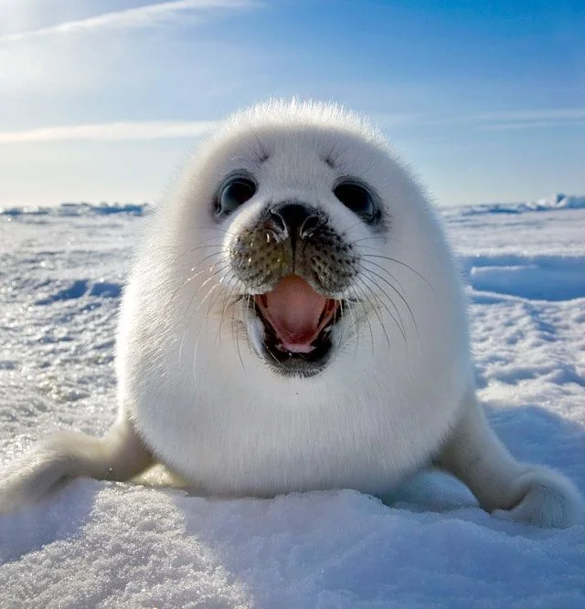

Marine Life
MAMMALS
Seals

What are Seals?
Seals are an aquatic mammal species of web-footed animals.
They range in size from 2.6 metres to 29.9 meters in length.
They live in cold temperaturesnajdnyagebanround body shape that thins out at the end making them swift swimmers.
Seals are cernivores meaning that their diet mainly consists of fish. some species do also consume squid, mollusks and crustaceans.
And unlike others Leapard seals eat penguins, seabirds in addition to fish and krill

Impacts of humanity
Climate chanfe is severely harming the ice seals (The ringed, ribbon, spotted and bearded seals)
These seals reliy on the ice for reporduction and safety from the water and the rapid ice loss causes seal pups to be seperated from their mothers.
Human greed and hunting has also lead to a decline of many seals.
In the past millions of seals were killed for their meat, bubber and pelt.
Now there is protection laws to prevent this but in some countries they are still killed and blamed for the decline of fish.